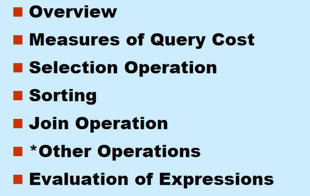
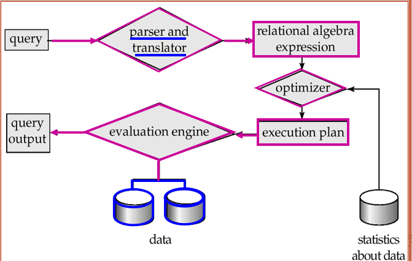

Chapter 15: Query Processing

1. 查询过程的基本步骤
- 解释和翻译(Parsing and translation)
- 优化(Optimization)
- 实现(Evaluation)

1.1 语法分析和翻译
类似于编译过程
- 解释器会检查语法规则，并验证关系是否存在...
- 将查询翻译为内部形式: 拓展关系代数 (ERA)
1.2 优化
为什么需要优化:
- 对于给定的SQL查询, 可能有许多等价的关系代数表达式
- 每个关系代数操作可以等价的使用几种不同的算法
怎样进行优化:
- 寻找出等价的关系代数表达式
- 生成查询执行计划：一系列制定了详细执行策略的原语操作(primitive operations)序列
- 在所有等价的计划中选择 cost 最低的, 考虑两个因素:
- 成本取决于执行所用算法
- 成本基于数据库目录中的统计信息进行估算
1.3 实现
查询执行引擎接受一个查询执行计划，执行计划，并返回查询结果
2. 查询代价的度量
查询代价 通常用 回答查询所需的总耗时衡量
- 影响因素: 磁盘访问 + CPU + 网络通讯
- 通常磁盘访问是主要代价, 且相对容易估计
磁盘访问代价包括:
- seek 操作次数
- 读取的块数 \(\times\) 平均块读取代价
- 写入的块数 \(\times\) 平均块写入代价
写一个块通常比读一个块更贵, 因为写入后还需要读回验证写入是否成功
为了简化, 通常只使用以下两个指标:
- \(t_T\): 传输一个块的时间, 约为 \(0.1ms\)
- \(t_S\): 一次 seek 的时间, 约为 \(4ms\)
若有 \(b\) 次 block transfer 和 \(S\) 次 seek, 则代价为: $$ b * t_T + S * t_S $$
简化公式中忽略 CPU 代价, 也不计入最终查询结果写回磁盘的代价
影响代价估计的因素:
- 主存中 buffer 的大小
- 内存越多, 磁盘访问需求越少
- 但真实可用内存受并发进程影响, 很难提前确定
- 数据是否已经在 buffer 中
- 若需要的数据已经在内存中, 可以避免磁盘 I/O
- 但这也很难在代价估计时准确考虑
因此通常会估计:
- 最坏情况: 假设只有操作所需的最小内存
- 最好情况: 假设可用内存较充足
3. Selection Operation 选择操作
选择操作的目标是找到并取回满足选择条件的记录
3.1 基本算法: File Scan
File scan: 不使用索引, 直接搜索文件中满足条件的记录
A1 linear search 线性搜索:
- 扫描文件中的每个块
- 检查每条记录是否满足选择条件
代价估计: $$ 1\ seek + b_r\ t_T $$
其中 \(b_r\) 表示关系 \(r\) 的文件块数
若选择条件在key attribute上: $$ 1\ seek + \frac{b_r}{2}\ t_T $$
对于等值查询操作一般是\(\frac{1}{2}\), 若是范围查询则仍需要扫描全部文件
线性搜索不依赖选择条件、文件中记录的顺序、是否存在索引, 因此总是可用
注意:
- 一般情况下 binary search 没有意义, 因为数据不一定连续存储
- 除非有索引, 否则 binary search 可能需要更多 seek, 反而不如 index search
3.2 使用索引和等值条件
Index scan: 使用 B+ tree 索引进行搜索
selection condition 必须在 index 的 search-key 上
A2 primary index on candidate key, equality
利用主索引, 在码属性上做等值比较
- 最多取回一条满足条件的记录
代价: $$ (H_i + 1) * (t_S + t_T) $$
其中 \(H_i\) 为索引树高, 其中\(H_i \times (t_S + t_T)\)表示访问索引树的代价, +1表示的是访问真正数据块的代价

A3 primary index on non-candidate key, equality
利用主索引, 在非码属性上做等值比较
- 可能取回多条记录
- 因为主索引对应文件的物理顺序, 匹配记录通常在连续 block 上
代价: $$ H_i * (t_T + t_S) + t_S + t_T * b $$
其中 \(b\) 为包含取回记录的块数, 由于记录连续, 所以只需要 1 次seek
A4 equality on search-key of secondary index
利用辅助索引做等值比较
-
若 search-key 是 candidate key: $$ (H_i + 1) * (t_T + t_S) $$
-
若 search-key 不是 candidate key:
-
可能取回多条记录
- 每条匹配记录可能位于不同 block
代价: $$ (H_i + n) * (t_T + t_S) $$
其中 \(n\) 为匹配记录数
辅助索引在返回大量记录时可能非常贵, 甚至比 linear scan 更差

3.3 涉及比较的选择
比较符包括:
- \(>, \geq, <, \leq, <>\)
与等值比较不同, 比较选择通常会返回一个范围
A5 primary index, comparison
基于主索引的比较, 假设关系在属性 \(A\) 上排序
- 对于 \(\sigma_{A \geq V}(r)\):
- 使用索引找到第一个 \(A \geq V\) 的 tuple
- 然后顺序扫描关系
- 对于 \(\sigma_{A \leq V}(r)\):
- 直接从文件开头顺序扫描到第一个 \(A > V\) 的 tuple
- 通常不使用索引
A6 secondary index, comparison
基于辅助索引的比较
- 对于 \(\sigma_{A \geq V}(r)\):
- 用索引找到第一个 \(A \geq V\) 的 index entry
- 顺序扫描 leaf nodes 到末尾
- 根据指针取回记录
- 对于 \(\sigma_{A \leq V}(r)\):
- 从 leaf pages 开始扫描, 直到遇到第一个 \(A > V\)
- 根据指针取回记录
辅助索引的范围查询可能对每条记录产生一次 I/O, 若取回记录很多, linear file scan 可能更便宜, 因为seek的次数可能少得多
3.4 复杂选择的实现
合取选择 Conjunction: $$ \sigma_{\theta_1 \land \theta_2 \land ... \land \theta_n}(r) $$
A7 conjunctive selection using one index
- 从 \(\theta_1, ..., \theta_n\) 中选择代价最低的条件先执行
- 将取回的元组放入内存
- 在内存中测试其他条件
先用最便宜的条件缩小候选集合, 再检查剩余条件
A8 conjunctive selection using composite index
如果存在合适的组合索引(composite index), 可以直接使用
例如:
create index a_bb on account(branch_name, balance);
则对于同时涉及 branch_name 和 balance 的条件, 可以使用该组合索引
A9 conjunctive selection by intersection of identifiers
通过 record pointer 的交集实现合取选择
- 对每个有索引的条件, 使用对应索引取回 record pointers
- 对这些 pointer 集合求交集
- 对交集结果排序
- 按 pointer 从文件中取回记录
- 没有索引的条件在内存中测试
先合并指针, 再取数据, 可以减少大量随机取记录的代价
析取选择 Disjunction: $$ \sigma_{\theta_1 \lor \theta_2 \lor ... \lor \theta_n}(r) $$
A10 disjunctive selection by union of identifiers
- 若所有条件都有可用索引:
- 分别取得每个条件对应的 record pointers
- 对 pointer 集合求并集
- 再取回记录
- 若并非所有条件都有索引:
- 使用 linear scan
否定 Negation: $$ \sigma_{\neg \theta}(r) $$
实现方式:
- 直接 linear scan
- 或将否定条件改写为可使用索引的形式
例如: $$ \sigma_{\neg(A < 50)}(r) \Rightarrow \sigma_{A \geq 50}(r) $$
4. Sorting 排序
排序的用途:
- 用户要求查询结果按某种顺序输出
- 某些 join 操作可以在排序后更快实现
可通过索引按顺序读关系, 但这只是逻辑有序, 并不保证物理连续, 可能导致每个 tuple 都访问一个磁盘块
排序方法:
- 若关系能放入内存, 可使用 quicksort 等内存排序算法
- 若关系不能放入内存, 使用 external sort-merge 外部排序归并

4.1 External Sort-Merge 外部排序归并
设:
- \(M\): 内存可容纳的 block 数
- \(b\): 关系总 block 数
- run: 排序过程中产生的中间子文件, 也称为归并段
Step 1: 创建 sorted runs
重复执行直到关系读完:
- 将关系的 \(M\) 个 blocks 读入内存
- 在内存中排序
- 将排序结果写入 run \(R_i\)
初始 run 数: $$ N_0 = \lceil \frac{b}{M} \rceil $$
Step 2: Merge the runs
使用 \(M - 1\) 个 buffer 作为输入 run 的缓冲区, 剩下 1 个 buffer 作为输出
- 每次从各输入 buffer 中选择当前最小记录写入输出 buffer
- 输入 buffer 空时, 读取对应 run 的下一块
- 输出 buffer 满时, 写回磁盘
若初始 run 数 \(N_0 \geq M\), 需要多轮 merge pass
- 每一轮将连续的 \(M - 1\) 个 runs 合并成一个新 run
- 每一轮使 run 的数量减少约 \(M - 1\) 倍
merge pass 数: $$ \lceil \log_{M-1}(\frac{b}{M}) \rceil $$
4.2 外部排序代价
每一轮 run generation 和 merge pass 都需要读写全部数据, 代价约为 \(2b\)
最终 pass 不计入最终写回结果的代价(可以一边归并一边被上层调用)
block transfer 总代价: $$ 2b_r(\lceil \log_{M-1}(\frac{b_r}{M}) \rceil + 1) - b_r $$
即: $$ b_r(2\lceil \log_{M-1}(\frac{b_r}{M}) \rceil + 1) $$
seek 代价:
 $$
2\lceil \frac{b_r}{M} \rceil + \lceil \frac{b_r}{b_b} \rceil(2\lceil \log_{M-1}(\frac{b_r}{M}) \rceil - 1)
$$
$$
2\lceil \frac{b_r}{M} \rceil + \lceil \frac{b_r}{b_b} \rceil(2\lceil \log_{M-1}(\frac{b_r}{M}) \rceil - 1)
$$
5. Join Operation 连接操作
常见 join 算法:
- Nested-loop join
- Block nested-loop join
- Indexed nested-loop join
- Merge-join
- Hash-join
5.1 Nested-Loop Join 嵌套循环连接
用于计算 theta join: $$ r \bowtie_\theta s $$
基本思想:
for each tuple tr in r:
for each tuple ts in s:
if (tr, ts) satisfy θ:
output tr · ts
- \(r\) 称为 outer relation
- \(s\) 称为 inner relation
- 不需要索引
- 可用于任何 join condition
- 代价高, 因为需要检查两个关系中的每一对 tuple
最坏情况, 内存只能容纳每个关系各一个 block:
block transfer: $$ n_r * b_s + b_r $$
seek: $$ n_r + b_r $$
这里假设 \(s\) 可以顺序读, 所以每次只需要 seek \(s\) 的开头就可以
最好情况, 较小关系能完全放入内存:
block transfer: $$ b_r + b_s $$
seek: $$ 2 $$
5.2 Block Nested-Loop Join
 block nested-loop join 是 nested-loop join 的改进:
block nested-loop join 是 nested-loop join 的改进:
- 每次不是用 outer relation 的一个 tuple, 而是用一个 block
- inner relation 的每个 block 与 outer relation 的每个 block 配对: 即将r block中的所有tuple 比较一遍后再更换s block
for each block Br in r:
for each block Bs in s:
for each tuple tr in Br:
for each tuple ts in Bs:
if tr 和 ts 满足 join 条件:
输出连接结果
最坏情况: - block transfer $$ b_r * b_s + b_r $$
- seek: $$ b_r + b_r = 2 * b_r $$
通常选择 block 数较少的关系作为 outer relation
最好情况, inner relation 全部且始终在内存中: - block transfer $$ b_r + b_s $$
改进: - 若内存大小为 \(M\) 个 blocks, 可以用 \(M - 2\) 个 blocks 作为 outer relation 的 blocking unit:
block transfer: $$ \lceil \frac{b_r}{M-2} \rceil * b_s + b_r $$
seek: $$ 2\lceil \frac{b_r}{M-2} \rceil $$
- 若是 equi-join, 且 join attribute 是 inner relation 的 key, 找到第一个匹配后即可停止 inner loop
- inner loop 可交替向前/向后扫描, 利用 LRU 策略下 buffer 中残留的块
对 outer 第 1 批 blocks：
正向扫描 inner：S1, S2, S3, S4
对 outer 第 2 批 blocks：
反向扫描 inner：S4, S3, S2, S1
对 outer 第 3 批 blocks：
正向扫描 inner：S1, S2, S3, S4
- 若 inner relation 有索引, 可使用 indexed nested-loop join
5.3 Indexed Nested-Loop Join
使用条件:
- join 是 equi-join 或 natural join
- inner relation 的 join attribute 上有索引
- 若没有索引, 可以临时为 join 构建索引
基本思想:
- 对 outer relation \(r\) 中的每个 tuple \(t_r\)
- 使用 inner relation \(s\) 上的索引查找满足 join 条件的 tuple
最坏情况: $$ n_r * c + b_r $$
其中: - \(c\) : 对 \(s\) 做一次索引查找并取回所有匹配 tuple 的代价 - \(n_r\) : outer relation 的 tuple 数
若使用 B+ tree 索引: $$ c = H_i + 1 $$
因此: $$ cost = [n_r * (H_i + 1) + b_r] * (t_T + t_S) $$
若两个关系的 join attribute 上都有索引: - 选择 tuple 数更少的关系作为 outer relation
5.4 Merge-Join / Sort-Merge Join 排序归并连接
只适用于: - equi-join - natural join
基本步骤:
- 若两个关系尚未按 join attribute 排序, 先排序
- 对两个已排序关系进行归并
- 对 join attribute 相同的 tuple 进行匹配
 若关系已经有序, 且相同 join attribute 值对应的所有 tuple 能放入内存:
若关系已经有序, 且相同 join attribute 值对应的所有 tuple 能放入内存: - 那么每个 block 通常只需要读一次
-
block transfer: $$ b_r + b_s $$
-
seek: $$ \lceil \frac{b_r}{b_b} \rceil + \lceil \frac{b_s}{b_b} \rceil $$
若关系未排序, 需要额外加上排序代价
Hybrid merge-join 混合归并连接:
适用情况:
- 一个关系已经排序
- 另一个关系在 join attribute 上有 secondary B+ tree index
思路:
- 将已排序关系与 B+ tree leaf entries 做 merge join
- 得到结果 \((t_r, P_s)\), 其中 \(P_s\) 是未排序关系 tuple 的地址
- 按地址 \(P_s\) 排序
- 按物理地址顺序扫描未排序关系, 将地址替换为实际 tuple
因为顺序扫描通常比大量随机查找更高效
5.5 Hash-Join 哈希连接
适用于: - equi-join - natural join
分区(partition): 分区阶段:
- 内存需要为每个分区开创一个分配一个block, 当其写满就写回disk的临时文件中
- 此外还需要一个 input buffer
分区阶段:
- 内存需要为每个分区开创一个分配一个block, 当其写满就写回disk的临时文件中
- 此外还需要一个 input buffer
设:
- \(H_{r0}, H_{r1}, ..., H_{rn}\) 为关系 \(r\) 的分区
- \(H_{s0}, H_{s1}, ..., H_{sn}\) 为关系 \(s\) 的分区
若: $$ i = h(t_r[JoinAttrs]) $$
则: $$ t_r \in H_{ri} $$
分区的 BT cost： - block transfer：\(2\times b_r\) - seek: \(2\frac{b_r}{b_b}\)
核心思想:
 - 使用 hash function \(h\) 根据 join attribute 对两个关系分区
- 若两个 tuple 的 join attribute 相同, 它们一定会被分到相同编号的 partition 中
- 因此只需要在对应分区之间做 join
- 使用 hash function \(h\) 根据 join attribute 对两个关系分区
- 若两个 tuple 的 join attribute 相同, 它们一定会被分到相同编号的 partition 中
- 因此只需要在对应分区之间做 join

Join BT cost: - block transfer: \(b_r + b_s\) - seek: \(2\times b_h\)
5.6 Hash-Join Algorithm
- Partition 阶段: 使用 hash function \(h\) 分别对 \(r\) 和 \(s\) 分区
- Probe 阶段:
- 对每个分区编号 \(i\):
- 将 \(H_{si}\) 读入内存
- 在 \(H_{si}\) 上基于 join attribute 建立内存 hash index
- 逐个读取 \(H_{ri}\) 中的 tuple
- 使用内存 hash index 查找匹配的 \(H_{si}\) tuple
- 输出连接结果
通常选择较小的关系作为 build input, 因为 build partition 需要放入内存
分区时的内存限制:
- 每次分区个数 \(n_h \leq M - 1\)
- 每个 build partition 的大小必须 \(\leq M - 2\), 因为 build input 要被读入内存
若 build partition的大小 \(> M-2\)逻辑上也可以实现, 不过因为 无法将\(H_s\)全部装入buffer中, 会使得运行效率大幅降低, 所以我们要求使用的 hash function 可以让每个 build partition 的大小 \(\leq M-2\)
当 \(n_h\) 过大, 会使得 \(n_h \leq M-1\); 当 \(n_h\) 过小, 可能使得\(分区大小 \geq M-2\)
若 partition 太大, 需要 recursive partitioning 递归分区
- 使用不同 hash function 继续划分过大的 partition
- \(r\) 和 \(s\) 必须使用相同方式继续分区
* 5.7 Hash-Join Overflow
5.8 Hash-Join 代价
若不需要 recursive partitioning:
block transfer: $$ 3(b_r + b_s) + 4n_h $$
其中:
- 分区阶段读写两个关系: \(2(b_r + b_s)\)
- join 阶段再读两个关系: \((b_r + b_s)\)
- \(4n_h\) 用于估计每个分区部分块不满带来的额外代价
seek: $$ 2(\lceil \frac{b_r}{b_b} \rceil + \lceil \frac{b_s}{b_b} \rceil) + 2n_h $$
若需要 recursive partitioning, 且对 \(s\) 分区的 pass 数为: $$ \lceil \log_{M-1}(b_s) - 1 \rceil $$
总 block transfer: $$ [2(b_r + b_s)\lceil \log_{M-1}(b_s) - 1 \rceil + b_r + b_s] * t_T $$
seek cost: $$ [2(\lceil \frac{b_r}{b_b} \rceil + \lceil \frac{b_s}{b_b} \rceil)\lceil \log_{M-1}(b_s) - 1 \rceil + 2n_h] * t_S $$
最好情况:
- 整个 build input 可以放入内存
- 不需要产生临时分区文件
代价下降为: $$ b_r + b_s $$
* 5.9 Hybrid Hash-Join
5.10 Complex Joins
合取连接条件: $$ r \bowtie_{\theta_1 \land \theta_2 \land ... \land \theta_n} s $$
实现方式:
- 使用 nested-loop 或 block nested-loop 先计算其中一个较简单的 join: $$ r \bowtie_{\theta_i} s $$
- 对中间结果测试其他条件: $$ \theta_1 \land ... \land \theta_{i-1} \land \theta_{i+1} \land ... \land \theta_n $$
析取连接条件: $$ r \bowtie_{\theta_1 \lor \theta_2 \lor ... \lor \theta_n} s $$
可分别计算每个 join, 然后求并: $$ (r \bowtie_{\theta_1} s) \cup (r \bowtie_{\theta_2} s) \cup ... \cup (r \bowtie_{\theta_n} s) $$
* 6. Other Operations 其他操作
7. Evaluation of Expressions 表达式求值
前面讨论的是单个关系代数操作的算法, 实际查询通常是一棵包含多个操作的 expression tree
对整棵表达式树的求值有两种主要方式:
- Materialization 实体化: 直接产生表达式的结果, 并写回disk; 每步操作都产生一个temp
- Pipelining 流水线: 边产生tuple边将其传入上层供使用
7.1 Materialization 实体化
 Materialized evaluation:
Materialized evaluation:
- 一次执行一个操作
- 从 expression tree 的最低层开始
- 每个操作的结果写入临时关系
- 上层操作再读取这些临时关系继续执行
优点:
- 总是可用
- 实现方式直接
缺点:
- 中间结果写磁盘再读回, 代价可能很高
总代价: $$ 各个操作代价之和 + 中间结果写入磁盘的代价 $$
优化: Double buffering
- 每个操作使用两个输出 buffer
- 一个 buffer 满时写入磁盘
- 另一个 buffer 继续接收输出
可以重叠磁盘写入和计算, 减少执行时间
7.2 Pipelining 流水线
 Pipelined evaluation:
Pipelined evaluation:
- 多个操作同时执行
- 一个操作产生的 tuple 不写入临时关系, 而是直接传给父操作
优点:
- 通常比 materialization 更便宜
- 避免中间关系写磁盘
限制:
- 并非所有操作都能流水线执行
- 取决于父操作类型、输出是否有序、算法是否能边读入边输出
流水线执行方式:
- demand driven / lazy evaluation 需求驱动: 由上而下吸引
- producer driven / eager pipelining 生产者驱动: 由下而上推动
7.3 三种常见查询执行模型
Iterator Model / Volcano Model / Pipeline Model
又称:
- 火山模型
- 流水线模型
- pull based 执行模型
核心思想:
- 将关系代数中的每个操作抽象为一个 Operator
- 整个 SQL 被构造成 Operator tree
- 查询树自顶向下调用
next() - 数据自底向上被拉取处理
优点:
- 简单
- 每个 Operator 可以单独实现逻辑
缺点:
next()调用次数过多- 一次只取一条 tuple, CPU 执行效率低
- join, subquery, order by 等操作经常会阻塞
Materialization Model
- 每个 Operator 一次处理所有输入
- 处理完成后一次性输出所有结果
- 更适合 OLTP 负载, 因为 OLTP 查询通常只访问小规模数据
Vectorized / Batch Model
- 类似火山模型, 每个 Operator 也实现
next() - 但每次
next()返回一批 tuples, 而不是一个 tuple
向量化模型是火山模型和物化模型的折中, 更适合 OLAP 查询, 可以显著减少 Operator 调用次数